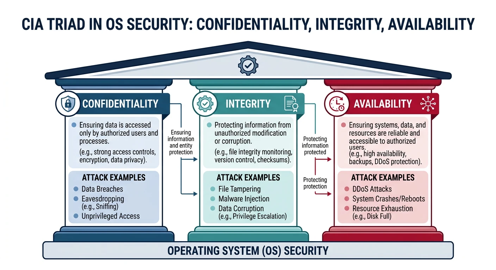
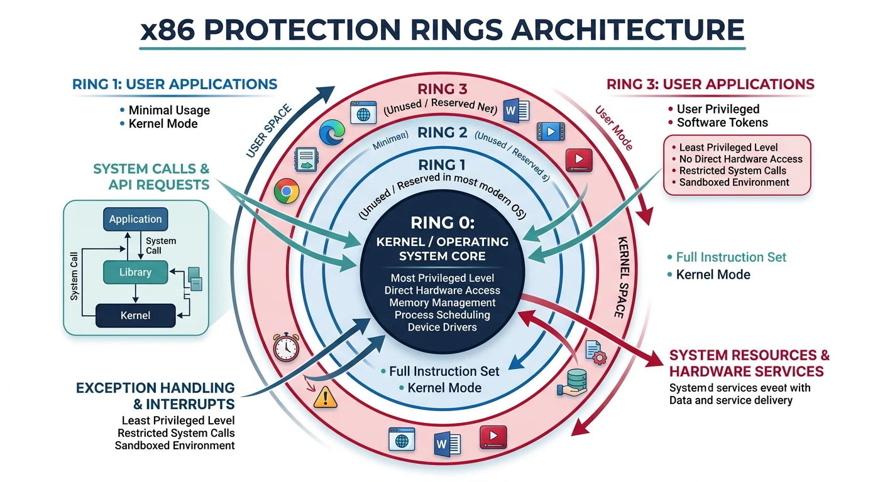
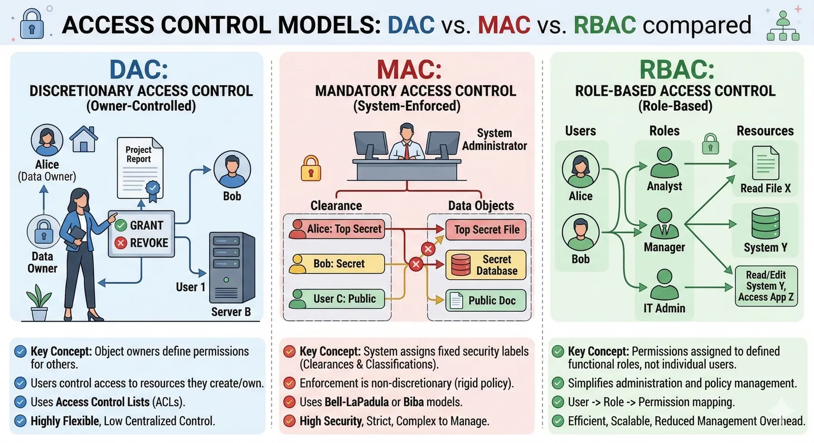
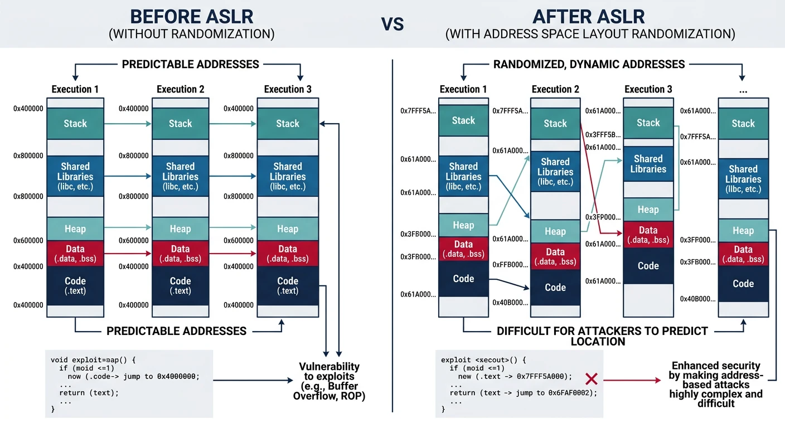
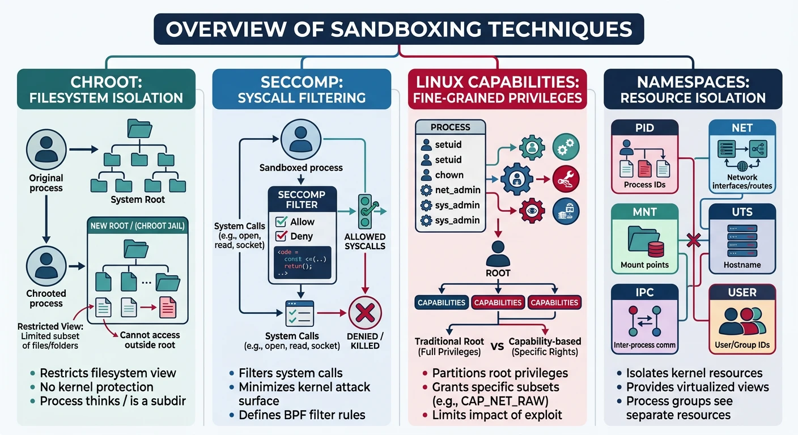

Operating system security is fundamental to overall system security. The OS enforces isolation, manages privileges, and provides protection mechanisms against various threats.
Series Context: This is Part 20 of 24 in the Computer Architecture & Operating Systems Mastery series. We explore how operating systems implement security protections.
The Security Imperative: The OS is the gatekeeper between applications and hardware. If compromised, everything falls. How does modern OS design defend against sophisticated attacks?
Security Goals
OS security aims to enforce the CIA triad plus additional properties.

The CIA triad — confidentiality, integrity, and availability form the foundation of OS security
Security Properties
Core Security Goals:
══════════════════════════════════════════════════════════════
1. CONFIDENTIALITY
• Prevent unauthorized information disclosure
• Process A can't read Process B's memory
• Users can't read other users' files
2. INTEGRITY
• Prevent unauthorized modification
• Only owner can modify their files
• Only kernel can modify page tables
3. AVAILABILITY
• System remains usable
• Prevent denial-of-service attacks
• Resource limits and quotas
4. AUTHENTICITY
• Verify identity of users/programs
• Login authentication
• Code signing verification
Attack Types:
━━━━━━━━━━━━━━━━━━━━━━━━━━━━━━━━━━━━━━━━━━━━━━━━━━━━━━━━━━━━
• Privilege escalation (user → root)
• Information leakage (read secrets)
• Code injection (run attacker code)
• Denial of service (crash/slow system)
Privilege Levels & Rings
x86 processors provide protection rings enforced by hardware.

x86 protection rings — Ring 0 (kernel) has full hardware access, Ring 3 (user) runs with restricted privileges
x86 Protection Rings:
══════════════════════════════════════════════════════════════
┌───────────────────────┐
│ Ring 3 (User) │ Least privileged
│ Applications │
│ │
│ ┌───────────────┐ │
│ │ Ring 2 │ │ (unused)
│ │ ┌─────────┐ │ │
│ │ │ Ring 1 │ │ │ (unused)
│ │ │┌───────┐│ │ │
│ │ ││Ring 0 ││ │ │ Most privileged
│ │ ││Kernel ││ │ │ Full HW access
│ │ │└───────┘│ │ │
│ │ └─────────┘ │ │
│ └───────────────┘ │
└───────────────────────┘
Modern usage: Only Ring 0 (kernel) and Ring 3 (user)
Privilege enforcement:
• CPL (Current Privilege Level) in CS register
• Privileged instructions (IN, OUT, HLT) only in Ring 0
• Memory access checked against page permissions
• System call (int 0x80, syscall) transitions Ring 3→0
Access Control
Access control determines what subjects (users, processes) can do to objects (files, memory).

Access control models — DAC (owner-controlled), MAC (system-enforced), and RBAC (role-based) compared
Access Control Models:
══════════════════════════════════════════════════════════════
1. DAC (Discretionary Access Control) - Unix/Linux
Owner decides permissions
$ ls -l secret.txt
-rw-r----- 1 alice staff 1234 Jan 15 secret.txt
│││││││││
││││││└── other: no permissions
│││└───── group: read only
└───────── owner: read+write
2. MAC (Mandatory Access Control) - SELinux, AppArmor
System-wide policy, users can't override
# SELinux context
$ ls -Z /etc/passwd
system_u:object_r:passwd_file_t:s0 /etc/passwd
3. RBAC (Role-Based Access Control)
Permissions assigned to roles, users get roles
admin_role: read, write, delete all files
user_role: read own files, write own files
guest_role: read public files
ASLR and DEP are crucial exploit mitigations in modern operating systems.

ASLR randomization — predictable fixed layout (left) vs randomized addresses on each run (right)
Address Space Layout Randomization
Without ASLR (predictable):
══════════════════════════════════════════════════════════════
0x08048000 Code (always here)
0x08060000 Data (always here)
0x40000000 libc.so (always here)
0xBFFFFFFF Stack (always here)
Attacker knows where everything is!
With ASLR (randomized each run):
══════════════════════════════════════════════════════════════
Run 1: Run 2:
0x55A3B000 Code 0x55F12000 Code
0x55A5D000 Data 0x55F34000 Data
0x7F4A2000 libc 0x7F8C1000 libc
0x7FFCA000 Stack 0x7FF91000 Stack
Attacker can't predict addresses!
# Check ASLR status on Linux
$ cat /proc/sys/kernel/randomize_va_space
2 # 0=off, 1=stack/libs, 2=full (heap too)
# See randomization in action
$ cat /proc/self/maps | head -3
55a3b7d01000-55a3b7d03000 r--p ... /bin/cat
# Run again - different addresses!
DEP/NX (Data Execution Prevention): Marks memory pages as non-executable. Stack and heap are data, not code. If attacker injects shellcode, CPU refuses to execute it. Works via NX bit in page table entries.
Sandboxing
Sandboxing confines untrusted code to limit damage if compromised.

Sandboxing techniques — chroot, seccomp, capabilities, and namespaces provide layered confinement
Sandboxing Techniques:
══════════════════════════════════════════════════════════════
1. CHROOT (Change Root)
Process sees different root directory
/jail/bin/bash thinks /jail is /
2. SECCOMP (Secure Computing)
Restrict system calls process can make
Web renderer: only read(), write(), mmap()
Can't open files, network, spawn processes
3. CAPABILITIES
Split root powers into fine-grained caps
CAP_NET_BIND_SERVICE: bind port <1024
CAP_SYS_ADMIN: mount filesystems
Don't give full root - give minimal caps
4. NAMESPACES (Linux)
Isolate system resources
PID namespace: process sees only its tree
Network namespace: isolated network stack
Mount namespace: different filesystem view
# Seccomp example - allow only exit
$ cat seccomp-test.c
prctl(PR_SET_SECCOMP, SECCOMP_MODE_STRICT);
// Now only read(), write(), exit(), sigreturn() allowed!
# View process capabilities
$ getpcaps $$
1234: = cap_chown,cap_dac_override,...
# Drop capabilities
$ capsh --drop=cap_net_raw -- -c "ping localhost"
ping: permission denied
Secure Boot
Secure Boot ensures only trusted code runs from power-on, creating a chain of trust.
Boot Chain of Trust:
══════════════════════════════════════════════════════════════
Power On
│
▼
┌───────────────────┐
│ UEFI Firmware │ ← Root of trust (in ROM)
│ (Secure Boot) │ Contains trusted keys
└───────┬───────────┘
│ Verify signature
▼
┌───────────────────┐
│ Bootloader │ ← Signed by Microsoft/vendor
│ (GRUB, Windows) │
└───────┬───────────┘
│ Verify signature
▼
┌───────────────────┐
│ Kernel │ ← Signed by OS vendor
└───────┬───────────┘
│ Verify modules
▼
┌───────────────────┐
│ Kernel Modules │ ← Signed drivers only
└───────────────────┘
If any signature fails → Boot halts!
Common Vulnerabilities
Understanding common vulnerabilities helps build secure systems.
Classic Attack Types:
══════════════════════════════════════════════════════════════
1. BUFFER OVERFLOW
char buf[64];
strcpy(buf, user_input); // No bounds check!
Mitigation: Stack canaries, ASLR, bounds checking
2. USE-AFTER-FREE
free(ptr);
*ptr = malicious; // Dangling pointer!
Mitigation: Memory-safe languages, sanitizers
3. INTEGER OVERFLOW
size_t len = user_len + header_size; // Can wrap!
char *buf = malloc(len); // Too small!
Mitigation: Checked arithmetic, safe APIs
4. RACE CONDITIONS (TOCTOU)
if (access(file, W_OK)) // Check
open(file, O_WRONLY); // Use - file may have changed!
Mitigation: Atomic operations, proper locking
5. SIDE-CHANNEL ATTACKS
Spectre/Meltdown: CPU speculation leaks data
Timing attacks: Execution time reveals secrets
Mitigation: Constant-time code, speculation barriers
Defense in Depth: No single defense is perfect. Layer multiple protections: ASLR + DEP + Stack canaries + Sandboxing + Secure boot. Attacker must bypass ALL of them.
Conclusion & Next Steps
OS security is a continuous battle. We've covered:
Security Goals: CIA triad and authenticity
Privilege Levels: Hardware rings and kernel/user separation
Key Insight: Security is about making attacks expensive—not impossible. Layered defenses force attackers to chain multiple exploits, dramatically raising the bar.